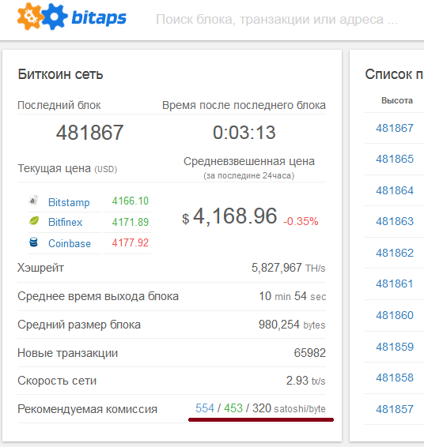
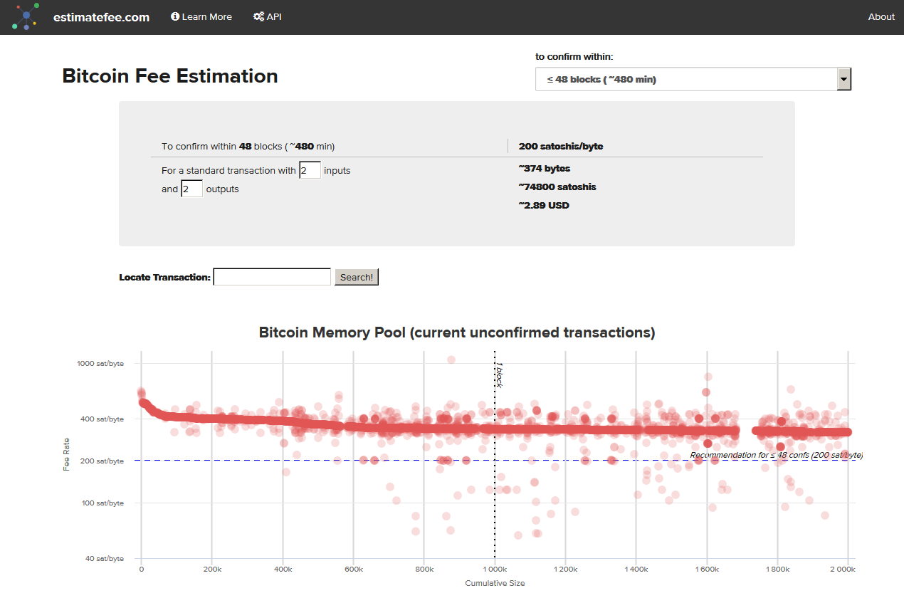

Не секрет, что в 2017 году стоимость транзакций стала такой, что нужно трижды подумать перед тем, как переводить небольшие суммы в размере двух-трех тысяч рублей. Поэтому тем, кто редко пользуется биткоином, но кому нужно быстро сделать платеж, необходимо адекватно оценивать размер комиссии за транзакцию перед совершением самой транзакции. Сделать это достаточно сложно в условиях, когда ситуация меняется ежедневно. Но способы оценки есть.
Способ первый - вручную через сайт BitAps.com
Нужно открыть ссылку: https://bitaps.com/ru/ после чего в открышейся странице найти строку "Рекомендуемая комиссия":

Далее нужно учесть размер транзакции в байтах, так как стоимость указывается за байт. Средний размер обычной транзакции, у которой 2 входа и 2 выхода составляет ~380 байт. Таким образом, стоимость самой медленно подтверждающейся транзакции (за 320 satochi/byte) вычисляется по формуле:
320 / 100 000 000 * 380 = 0,001216 Bitcoin
На 24.08.2017, при курсе 4169 USD/Bitcoin, это 5,06$. А в рублях это ~300 руб.
Таким образом, при переводе 1000 руб, теряется 30%. Вывод: биткоин не предназначен для перевода маленьких сумм! Для того, чтобы платить за перевод 1%, нужно переводить не менее 30 000 руб (около 500$).
Способ второй - автоматический расчет через сайт EstimateFee.com
Нужно открыть ссылку: https://estimatefee.com, выбрать время подтверждения блока (чем больше время, тем меньше комиссия) в строке "to confirm within":

Сразу будет высчитана стоимость транзакции в долларах. Ее можно сравнить тем, что вычислялось вручную, и понять порядок стоимости транзакции.
Способ третий, самый выгодный
Существует сайт https://bitcoinfees.earn.com/ на котором отображается самая свежая статистика по прошедшим и отклоненным транзакциям. Оранжевая линия - не завершенные транзакции, синяя линия - завершенные. Слева цена отчисления в Sat/Byte (напоминаю, что 1 Сатоши это 0.00000001 BTC).
Выглядит эта таблица так:
Задача в том, чтобы указать отчисление за транзакцию не меньше, чем та цена, у которой синяя линия длиннее чем оранжевая. В данном случае это 101-110. Меньше этой суммы указывать не следует, ибо транзакция будет отклоняться почти всеми майнерами. Лучше взять значение из среднего диапазона, ориентируясь на количество блоков (число справа), спустя которые транзакция, предположительно, попадет в блокчейн.